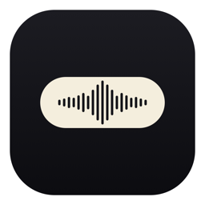

WhisperToolHold ⌥ option + ⌃ control, talk, let go. WhisperTool transcribes on your Mac and types the text right at your cursor, in any app. Free and open source.
Free & open source · Apple Silicon (M1 or later) · 174 MB · macOS 14+ · Source on GitHub · How to install
Hold ⌥+⌃, speak, release. A beep tells you when it's listening and when it's done.
Mail, Slack, Notion, your code editor — even apps in full screen. The text lands where your cursor is.
Removes fillers, handles self-corrections, dictated punctuation and numbered lists.
GPU transcription with mlx-whisper (large-v3-turbo), with a CPU fallback.
Spanish stays Spanish, English stays English, switched per phrase automatically.
Add your own free Gemini key and an AI pass tidies grammar — and can format a dictated email.
No cloud, no account. Your audio is transcribed locally and never uploaded. The optional AI polish sends only the transcribed text, and only if you turn it on with your own key.
About a minute. Step 3 happens only the first time. The first launch also downloads the speech model (about 1.6 GB), once.
Open WhisperTool.dmg and drag WhisperTool onto the Applications folder.
macOS says Apple could not verify “WhisperTool” is free of malware. It says that about every app that isn't notarized by Apple. Click Done, not Move to Trash.
Open System Settings → Privacy & Security, scroll down to Security and click Open Anyway next to “WhisperTool” was blocked. Confirm with your password or Touch ID. From then on it opens with a double-click.
macOS asks for Microphone (to hear you) and Accessibility (to paste the text). If it also asks for Input Monitoring, allow it so the hotkey works, then reopen the app. Click into any text box, hold ⌥+⌃ and talk.
Why the warning? Notarizing an app needs a paid Apple developer account ($99 a year). This is a free side project, so it isn't notarized. The full source code is on GitHub, and you can check that your download is exactly the file I built. In Terminal:
shasum -a 256 ~/Downloads/WhisperTool.dmg
should print 10b124ceb7fb620f05c57ef45ef09b52a5a85d4e43390102fbe41e688ade403b
xattr -dr com.apple.quarantine "/Applications/WhisperTool.app"
From source instead: git clone https://github.com/nachoie123/whispertool.git && cd whispertool && pip3 install -r requirements.txt && python3 main.py (Python 3.12).